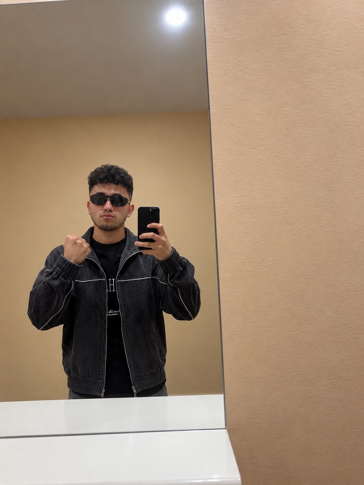
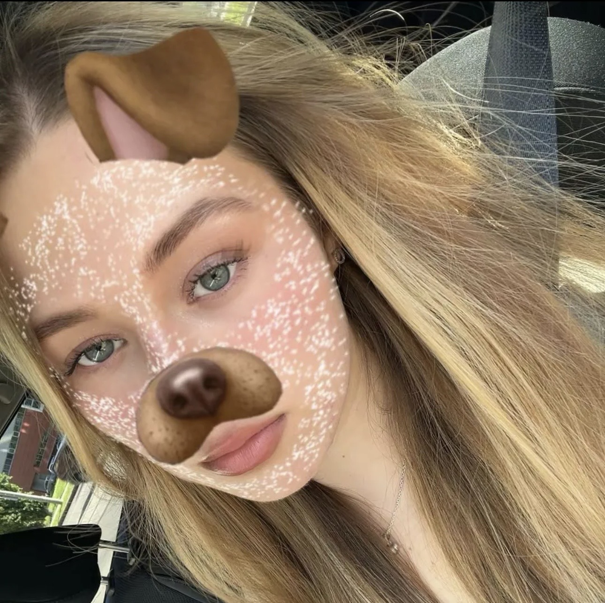

✦ Novosibirsk

✦ Dresden
Drag to explore the Earth · Two corners of one world
Novosibirsk, RussiaDresden, Germany
— km
as the crow flies · across one beautiful Earth
🎧
Our little soundtrack
A song for this little moment, wherever we are in the world.
Tap play when you're ready 💗
💞
Our little story
We've been talking for 7 days.
Just one week — and already a sweet little memory.